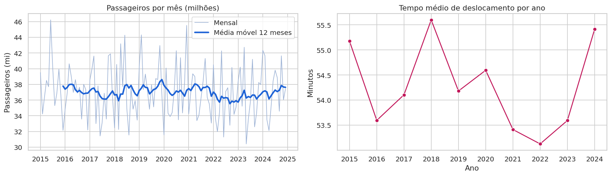
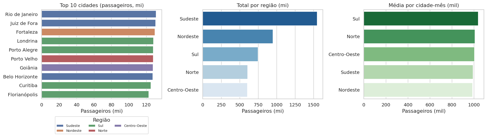
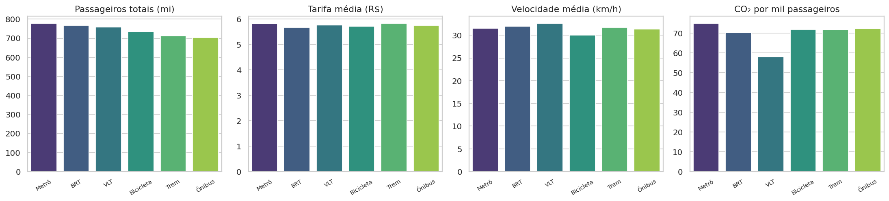
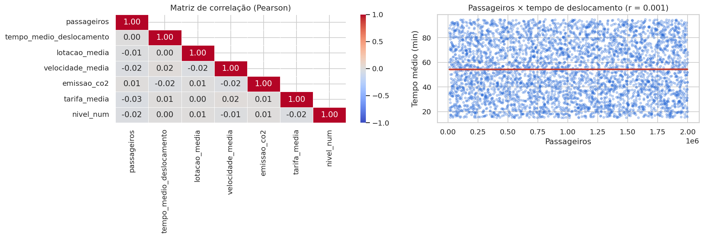

Sobre o projeto
O crescimento das cidades pressiona o transporte público: viagens mais longas, veículos lotados e vias congestionadas afetam a qualidade de vida, a produtividade e o meio ambiente. Este projeto investiga padrões de mobilidade urbana no Brasil entre 2015 e 2024 e organiza os resultados em um dashboard interativo.
O trabalho cobre leitura e tratamento da base, análise exploratória, criação de indicadores, visualizações, correlação estatística e publicação online.
Perguntas de análise
- Quais cidades têm o maior fluxo de passageiros?
- Qual meio de transporte é o mais utilizado?
- O tempo médio de deslocamento aumentou ao longo do tempo?
- Existem diferenças regionais relevantes e quais regiões sofrem mais pressão?
- Há relação estatística entre passageiros, tempo de deslocamento e congestionamento?
Indicadores analisados
Valores da base completa. No dashboard, todos eles são recalculados conforme os filtros escolhidos.
- Total de passageiros
- 4,45 bilhões
- Cidade mais movimentada
- Rio de Janeiro 131,1 milhões de passageiros
- Meio de transporte predominante
- Metrô 17,5% do total; o menor, Ônibus, tem 15,8%
- Tempo médio de deslocamento
- 54,3 min
- Tarifa média
- R$ 5,76
- Nível médio de congestionamento
- Médio 2,47 em uma escala de 1 a 4
O que os dados mostram
- Fluxo: as 5 cidades mais movimentadas ficam entre 128 e 131 milhões de passageiros, uma diferença pequena.
- Tempo: a média anual oscila entre 53,1 e 55,6 min, sem tendência de aumento entre 2015 e 2024.
- Regiões: o Sudeste soma 35% dos passageiros, mas tem 13 das 37 cidades. Por cidade, as regiões são muito parecidas.
- Congestionamento: os quatro níveis têm pesos semelhantes e o tempo médio em nível crítico (53,9 min) é igual ao do nível baixo (54,1 min).
- Correlação: o maior coeficiente entre qualquer par de variáveis é 0,03. Passageiros e tempo de deslocamento: r = 0,001, sem relação detectável.
Resultados tão uniformes são característicos de uma base simulada por sorteio. O valor do projeto está no método aplicado e na leitura crítica dos números.
Dashboard interativo
O dashboard tem cinco páginas e sete filtros múltiplos na barra lateral (ano, mês, região, estado, cidade, meio de transporte e nível de congestionamento). Os filtros valem para todas as páginas.
- Visão geral
KPIs, evolução temporal e conclusão executiva. - Regiões e cidades
Rankings, comparação regional e índice de pressão. - Meios de transporte
Comparação modal, emissões e tabela dinâmica. - Congestionamento
Distribuição dos níveis e sazonalidade mês × ano. - Correlações
Matriz de Pearson/Spearman, dispersão e teste de significância.
Gráficos da análise




Limitações
A base é simulada. Não há coluna de horário, então os horários de pico não puderam ser medidos (a sazonalidade foi analisada por mês e ano). Também não há população, e por isso a relação entre população e fluxo não pôde ser testada. Velocidade, emissão e tarifa não trazem unidade na base.
Tecnologias utilizadas
- Python
- Pandas
- NumPy
- Matplotlib
- Seaborn
- SciPy
- Streamlit
- GitHub
- GitHub Pages